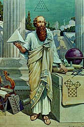
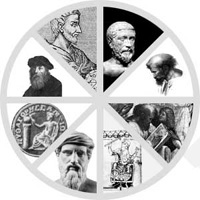
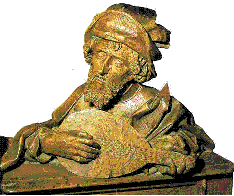

| Born | Approximately 569 BC, Samos Greece |
| Died | Approximately 500 - 475 BC, Metapontum Italy |
Pythagoras is often referred to as the first pure mathematician. He was born on the island of Samos, Greece in 569 BC. Various writings place his death between 500 BC and 475 BC in Metapontum, Lucania, Italy. His father, Mnesarchus, was a gem merchant. His mother's name was Pythais. Pythagoras had two or three brothers.
Some historians say that Pythagoras was married to a woman named Theano and had a daughter Damo, and a son named Telauges, who succeeded Pythagoras as a teacher and possibly taught Empedocles. Others say that Theano was one of his students, not his wife, and say that Pythagoras never married and had no children.
Pythagoras was well educated, and he played the lyre throughout his lifetime, knew poetry and recited Homer. He was interested in mathematics, philosophy, astronomy and music, and was greatly influenced by Pherekydes (philosophy), Thales (mathematics and astronomy) and Anaximander (philosophy, geometry).
Pythagoras left Samos for Egypt in about 535 B.C. to study with the priests in the temples. Many of the practices of the society he created later in Italy can be traced to the beliefs of Egyptian priests, such as the codes of secrecy, striving for purity, and refusal to eat beans or to wear animal skins as clothing.

Ten years later, when Persia invaded Egypt, Pythagoras was taken prisoner and sent to Babylon (in what is now Iraq), where he met the Magoi, priests who taught him sacred rites. Iamblichus (250-330 AD), a Syrian philosopher, wrote about Pythagoras, "He also reached the acme of perfection in arithmetic and music and the other mathematical sciences taught by the Babylonians..."
In 520 BC, Pythagoras, now a free man, left Babylon and returned to Samos, and sometime later began a school called The Semicircle. His methods of teaching were not popular with the leaders of Samos, and their desire for him to become involved in politics did not appeal to him, so he left.
Pythagoras settled in Crotona, a Greek colony in southern Italy, about 518 BC, and founded a philosophical and religious school where his many followers lived and worked. The Pythagoreans lived by rules of behavior, including when they spoke, what they wore and what they ate. Pythagoras was the Master of the society, and the followers, both men and women, who also lived there, were known as mathematikoi. They had no personal possessions and were vegetarians. Another group of followers who lived apart from the school were allowed to have personal possessions and were not expected to be vegetarians. They all worked communally on discoveries and theories. Pythagoras believed:
Because of the strict secrecy among the members of Pythagoras' society, and the fact that they shared ideas and intellectual discoveries within the group and did not give individuals credit, it is difficult to be certain whether all the theorems attributed to Pythagoras were originally his, or whether they came from the communal society of the Pythagoreans. Some of the students of Pythagoras eventually wrote down the theories, teachings and discoveries of the group, but the Pythagoreans always gave credit to Pythagoras as the Master for:

Pythagoras studied odd and even numbers, triangular numbers, and perfect numbers. Pythagoreans contributed to our understanding of angles, triangles, areas, proportion, polygons, and polyhedra.
Pythagoras also related music to mathematics. He had long played the seven string lyre, and learned how harmonious the vibrating strings sounded when the lengths of the strings were proportional to whole numbers, such as 2:1, 3:2, 4:3. Pythagoreans also realized that this knowledge could be applied to other musical instruments.
The reports of Pythagoras' death are varied. He is said to have been killed by an angry mob, to have been caught up in a war between the Agrigentum and the Syracusans and killed by the Syracusans, or been burned out of his school in Crotona and then went to Metapontum where he starved himself to death. At least two of the stories include a scene where Pythagoras refuses to trample a crop of bean plants in order to escape, and because of this, he is caught.
The Pythagorean Theorem is a cornerstone of mathematics, and continues to be so interesting to mathematicians that there are more than 400 different proofs of the theorem, including an original proof by President Garfield.